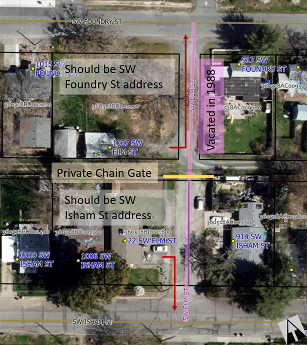
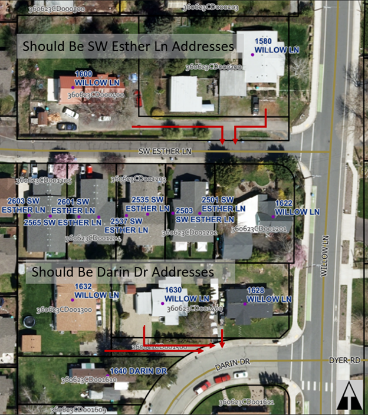
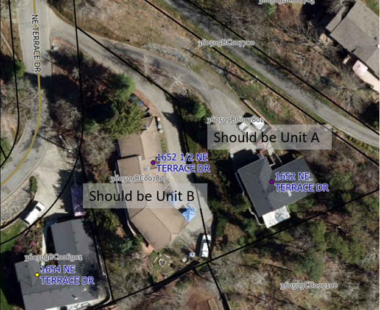
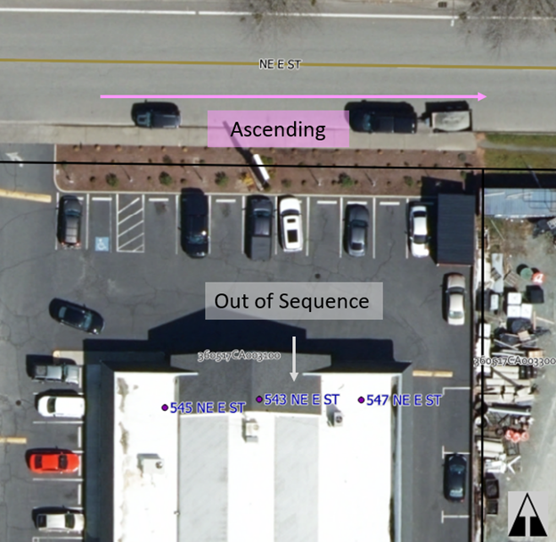

2024 Address Strategic Plan
The Address Strategic Plan identifies issues related to existing addresses, and serves as a planning document for developing policies and strategies for resolving these issues. Address issues fall into five broad categories:
- Deprecated street names
- Address number suffixes
- Out-of-sequence numbering
- Inaccurate directional designation
- Incorrect Parity
Deprecated street names refer to addresses where the street name no longer corresponds to the street providing access to the property, and these present a concern for emergency response. Emergency responders expect the street name of the address to correspond to the named public street that provides primary access to the property.
Address number suffixes, an identifier modifying the address number such as 1/2 or 3/4, present an issue for emergency reponders because the computer-aided dispatch system used by emergency response does not recognize address number suffixes.
Out-of-sequence numbering refers to address numbers that do not adhere to the numbering sequence established in the block. According to the municipal code, address numbers should increase monotonically as they get farther from the city center.
The ostensible purpose of directional designations is to help orient emergency responders navigating the city at night, but unlike the previous issues, the problems with inaccurate directional designations do not originate from emergency response issues. In this case the assessor’s office differs from the City in recorded directional designation for hundreds of parcel situs addresses, and this document aims to provide clear process by which to change or confirm the directional designation of a street.
Incorrect parity means that the address number is odd when it should have been even, or vice versa. While there is some room for interpretation of alignment for curvilinear streets, it is still possible to get the parity wrong. The perceived risk from incorrect parity is fairly low for an individual property, but if parity is not standardized, then we lose the ability to use parity as a way to orient and direct emergency responders. So correcting violations in parity rules helps to protect the efficacy of this strategy.
Address Issues
Issue: Deprecated Street Names
Affected addresses:
- 22 & 1007 SW Elm St, 1580, 1600, 1628, 1630 & 1632 Willow Ln;
- 271 Fruitdale Dr, 271 Fruitdale Dr Unit D, 275 & 301 Fruitdale Dr;
Description: The City vacated SW Elm St in 1988, and yet two properties still have SW Elm St addresses, even though SW Elm St no longer exists (see Figure 1). These addresses came to staff attention because of delays and confusion experienced during emergency response. When SW Elm St was vacated, it was not removed from the City transportation map. As a result, the CAD system routed emergency response vehicles through the former SW Elm St, who discovered it is now a gated private drive blocking access. Existing SW Elm St addresses (22 and 1007 SW Elm St) need to be reassigned addresses using street names consistent with their primary access, defined as the first public street providing access to their private driveway.

The primary access to a property can change as development density increases. Addresses that relied on a long private driveway to access a public road may find new access streets become available as a result of subdivisions created nearby. In the case of 1630 Willow Ln, the creation of the Willow Glen Subdivision resulted in part of their private drive becoming Darin Dr, and now their primary access has changed from Willow Ln to Darin Dr, necessitating a change to a Darin Dr address. Likewise, 1580 & 1600 Willow Ln previously took primary access from Willow Ln, but now take access from Esther Ln, and should receive Esther Ln addresses (see Figure 2).

The properties with Fruitdale Dr assignments take primary access from either Poplar Dr or Canal Ln.
Issue: Address Number Suffixes (½ and ¾)
Affected Addresses: 42 properties total.
Description: An address number suffix is a modifier following an address number that is part of the complete address number, such as ½ or ¾. Historically, the City assigned an address number suffix when there was insufficient spacing in the street number sequencing to accommodate additional density. Periodically we receive complaints from 911 emergency response that they cannot create a response ticket for an address because their computer aided dispatch (CAD) system is not set up to accommodate address number suffixes. As a consequence, we do not issue new addresses with an address number suffix. This document tracks existing addresses with address number suffixes, with the goal of reassigning addresses that are valid and compatible with the emergency response CAD system.
There are currently 21 properties with address number suffixes that need new address assignments. Because these addresses originate in locations where tight number sequencing does not permit assignment of a unique address number, both the property with the address number suffix assigned and the neighboring property with the shared address number would likely need to be reassigned to prevent ambiguity. For instance, if we changed 305 ½ SE H ST to 305 SE H ST UNIT B, we would also have to change 305 SE H ST to 305 SE H ST UNIT A.
For every house with an address number suffix that we fix, there is a neighboring house with an otherwise valid address that also needs to be changed to accommodate the infill, meaning to fix 21 addresses we may need to change 42 in total (see Figure 3). The reason for changing both addresses comes from the proposed code amendment, 6.40.030 (F): “Addresses shall be unique and unambiguous: If an address includes a subaddress identifier (unit number or letter), other buildings or portions of a building sharing the parent address shall also bear a unique identifier (100 E Park St A & B, not 100 E Park St and 100 E Park St A).”

Issue: Out of Sequence Numbering
Affected Addresses: 543-547 NE E ST
Description: This is a straightforward case where the address numbers fail to increase monotonically as distance from the city center increases, going from 545 down to 543, then up to 547 (see Figure 4). Note that in this case we cannot switch 543 and 545 to resolve the issue because 543 also happens to be a duplicate address. The reason this is difficult to resolve without the proposed language change is that changing the out-of-sequence value (543) involves also changing a neighboring address that by itself violates no addressing rules. There being no even numbers between 545 and 547, either one or the other could adopt unit numbers (eg. 545 NE E ST UNITS A & B), or one could change its address number in addition (eg. 543 changing to 547, and the current 547 changing to 549).

Issue: Inaccurate Directional Designations
Affected Addresses: 1216-1337 SE Oakview Dr (18 addresses), 802-2001 W Harbeck Rd (80 addresses).
Description: From 1950-2023, GPMC 6.40.030 (B) specified that new streets shall receive a directional designation of NE, NW, SE or SW, but historically this standard was not consistently applied. In some cases, the City failed to apply a directional designation, but the assessor’s office assumed one was in place, resulting in parcel situs addresses that do not match the addresses assigned by the City. In other cases, the City has consistently applied a directional designation but the assessor’s office has not followed suit. In the case of Oakview Dr, our office recently added the addresses 1216 SE Oakview Dr Units A, B & C, and the assessor’s office inquired whether addresses on Oakview are supposed to have the SE prefix. Unless the City takes specific action to change a street name, the assessor’s office is obliged to use the street name as recorded in the final plat. We could not find a plat record for Oakview Dr (the best we could do is a bill of sale from the early ‘40s reserving the right-of-way for road purposes). Since we were unable to use the plat to prove the presence of a directional designation, the assessor’s office requested the City take specific action to adopt the directional designation, at which point they would change their records to match.
In the case of West Harbeck Rd, address numbers 269-709 (25 addresses) have parcel situs addresses of West Harbeck Rd, and address numbers 802-2001 (80 addresses) have parcel situs addresses of SW West Harbeck Rd (see Figure 5). The City does not recognize the SW prefix for West Harbeck Rd, considering West to be the directional designation and Harbeck to be the street name.
Issue: Incorrect Parity
Affected Addresses:
- 271 Poplar Dr Unit C
- 1510, 1522, 1546, 1588, 1602, 1614, 1626, 1638, 1650 Poplar Dr
From GPMC 6.40.030 (D):
On linear streets:
- Locations on the north or west side of the street shall receive even numbering.
- Locations on the south or east side of the street shall receive odd numbering.
On curvilinear streets:
- Numbering shall follow that of a linear street matching the preponderance of alignment along the street.
- If the street changes alignment, numbering parity may follow that of a linear street matching the new alignment.
Description: Poplar Dr is a curvilinear with a predominantly east-west alignment, indicating that properties on the south side of the street should receive odd numbering. However, all the numbers assigned to the south side of Poplar Dr are even, with the exception of 401, which is out of sequence.